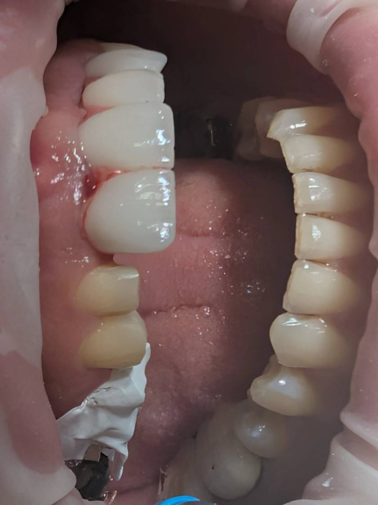

🟦 Insight 36 — ایزولاسیون مرحلهای با نوار تفلون؛ کنترل توالی باند و جلوگیری از آلودگی ناخواسته

📝 توضیح بالینی
-
در تحویل چند واحد لمینیت، رعایت توالی باندینگ اهمیت حیاتی دارد. دندانهایی که هنوز نوبت باند آنها نرسیده، اگر در معرض اسید، باند یا سمان قرار بگیرند، عملاً از پروتکل خارج میشوند.
-
در این کیس، دندانهای تراشخوردهای که هنوز نوبت باندشان نبود، با نوار تفلون پوشانده شدند و نوار بهصورت ملایم به داخل سالکوس هدایت شد تا در جای خود فیکس بماند.
-
این کار دو مزیت کلیدی ایجاد میکند:
- ۱. جلوگیری از آلودگی اسیدی (Over-etch ناخواسته) — تماس ناخواسته اسید با دندانهای خارج از نوبت میتواند باعث اچ زودهنگام شود. تکرار اچ روی سطحی که قبلاً تغییر یافته، کیفیت باند را کاهش میدهد.
- ۲. جلوگیری از آلودگی به باند و سمان — تماس ناخواسته با باند یا سمان باعث میشود سطح دندان شرایط ایدهآل برای باندینگ در مرحله اصلی را از دست بدهد.
-
پس از قرار دادن هر واحد روی دندان و تمیز کردن کامل، قبل کیور نوار تفلون از دندانهای مجاور برداشته میشود تا در نشستن دقیق لمینیتهای بعدی اختلال ایجاد نکند.
-
نکته کلیدی: در باندینگ چند واحدی، فقط دندانی که در آن لحظه باند میشود باید وارد چرخه مواد شود. ایزولاسیون با تفلون، راهی ساده و مؤثر برای حفظ انسجام پروتکل و جلوگیری از ورود زودهنگام سایر دندانهاست.
✍️ دکتر فواد شهابیان
متخصص پروتزهای دندانی و ایمپلنت